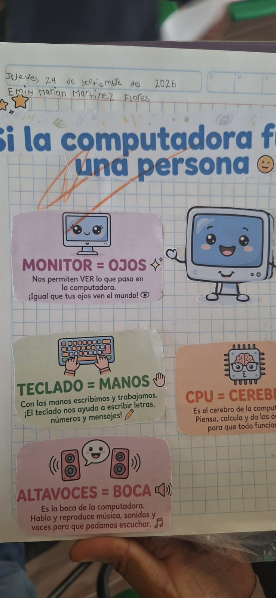

Artes y Computación
Introducción a las artes y la computación en el estudiantado
Durante el mes de Octubre nuestras y nuestros estudiantes de 1° a 6° grado aprenden juntos mientras adquieren conocimientos sobre e! hardware de las computadoras, lo que contribuye a una alfabetización inicial en TIC